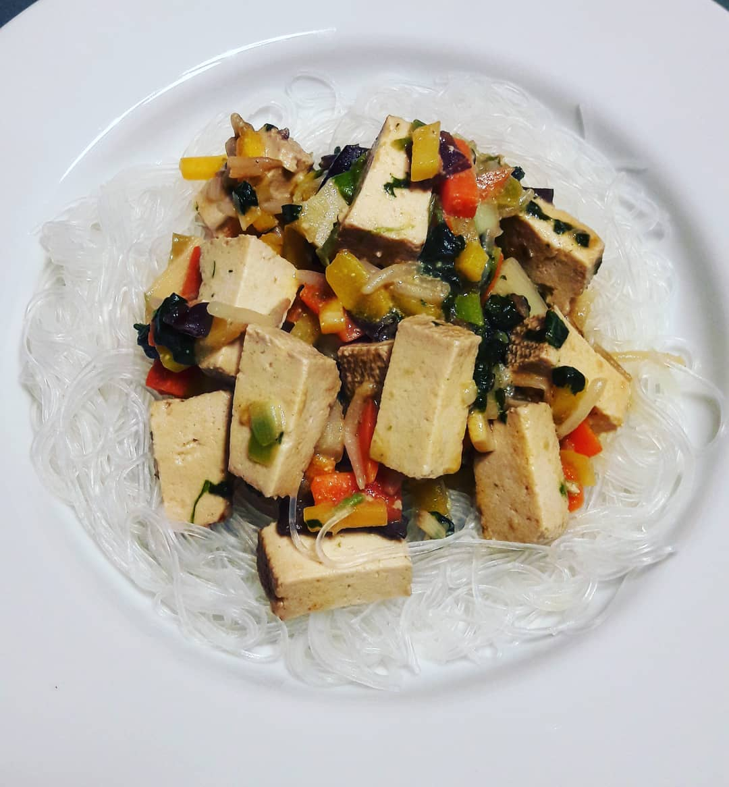

Tofu so zeleninou podľa @kedmasmuzavegana — Normy Jedál
VEGAN rýchly obed 💯👌 sklenené rezance so zeleninou a tofu 👅🌱✔ #kedmasmuzavegana #veganlunch #veganfood #veganinspiration #veganfriendly #veganfriends #veganslovakia #vegankosice #dnesjemvegan #tofusozeleninou #veganinspiracia #veganivkosiciach #veganinsta #veganinstagram #vegan #vegans #🌱